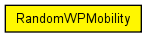
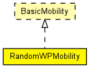

Random Waypoint mobility model.
The node moves in line segments. For each line segment, a random destination position (distributed uniformly over the playground) and a random speed is chosen. You can define a speed as a variate from which a new value will be drawn for each line segment; it is customary to specify it as uniform(minSpeed, maxSpeed). When the node reaches the target position, it waits for the time waitTime which can also be defined as a variate. After this time the the algorithm calculates a new random position, etc.
This model was written by Georg Lutz (GeorgLutz AT gmx DOT de) for his diploma thesis "Effizientes Modell fuer Funkverbindungen in 4G-Netzen fuer OMNeT++" (Efficient model for radio links in 4G networks for OMNeT++) at Institut fuer Telematik, Universitaet Karlsruhe (Institute for Telematics, University Karlsruhe, Germany), 2005-06-21. Slightly modified by Andras Varga 2005.06.22.
Author: Georg Lutz
The following diagram shows usage relationships between types. Unresolved types are missing from the diagram. Click here to see the full picture.
The following diagram shows inheritance relationships for this type. Unresolved types are missing from the diagram. Click here to see the full picture.
| Name | Type | Default value | Description |
|---|---|---|---|
| debug | bool | false |
debug switch |
| x | double | -1 |
start x coordinate (-1 = display string position, or random if it's missing) |
| y | double | -1 |
start y coordinate (-1 = display string position, or random if it's missing) |
| updateInterval | double | 0.1s | |
| speed | double | 2mps |
use uniform(minSpeed, maxSpeed) or another distribution |
| waitTime | double |
wait time between reaching a target and choosing a new one |
| Name | Value | Description |
|---|---|---|
| display | i=block/cogwheel_s |
// // Random Waypoint mobility model. // // The node moves in line segments. For each line segment, a random destination // position (distributed uniformly over the playground) and a random speed // is chosen. You can define a speed as a variate from which a new value // will be drawn for each line segment; it is customary to specify it as // uniform(minSpeed, maxSpeed). When the node reaches the target position, // it waits for the time waitTime which can also be defined as a variate. // After this time the the algorithm calculates a new random position, etc. // // This model was written by Georg Lutz (GeorgLutz AT gmx DOT de) for his // diploma thesis "Effizientes Modell fuer Funkverbindungen in 4G-Netzen fuer // OMNeT++" (Efficient model for radio links in 4G networks for OMNeT++) // at Institut fuer Telematik, Universitaet Karlsruhe (Institute for // Telematics, University Karlsruhe, Germany), 2005-06-21. Slightly modified // by Andras Varga 2005.06.22. // // @author Georg Lutz // simple RandomWPMobility like BasicMobility { parameters: bool debug = default(false); // debug switch double x = default(-1); // start x coordinate (-1 = display string position, or random if it's missing) double y = default(-1); // start y coordinate (-1 = display string position, or random if it's missing) double updateInterval @unit("s") = default(0.1s); volatile double speed @unit("mps") = default(2mps); // use uniform(minSpeed, maxSpeed) or another distribution volatile double waitTime @unit("s"); // wait time between reaching a target and choosing a new one @display("i=block/cogwheel_s"); }